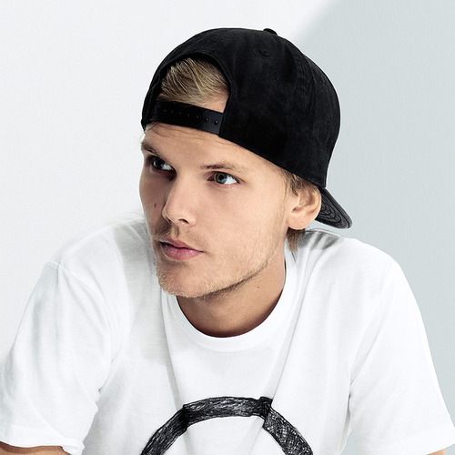

Jump to Hold On Never Leave
Jump to Wake Me Up
Jump to Waiting For Love
References
Vietnamese-German University
Foundation Year
English for Computer Science
My name is Vu Tuan Hung
Student ID: 11446

Jump to Hold On Never Leave
Jump to Wake Me Up
Jump to Waiting For Love
References
(Tim Berling)

Tim Bergling, (born 8 September 1989), better known for his stage name Avicii, is a Swedish musician, DJ, remixer and record producer. Bergling was ranked third on DJ Mag in 2012 and 2013, and has been nominated twice for a Grammy Award. Some of his most famous songs are "I Could Be the One" with Nicky Romero, "Wake Me Up", "You Make Me". He released his debut studio album, True, in 2013, which received generally positive reviews from music critics, peaked within the top ten in more than fifteen countries. In 2015, Bergling released his second studio album, Stories.
I thought my heart was gone
After I lost it all
Felt I was falling down
Still I chose to be proud
Until I hit the ground
You got me back on my feet again
You said that lovers come and may go
You said that time will pass
But I'll stay your friend
I’ll help you up when you feel alone
I was lonely
But after all you told me I'd be ok
Hope that everyone has felt like me
Hold on never leave
(x2)
Feeling my way through the darkness
Guided by a beating heart
I can't tell where the journey will end
But I know where to start
They tell me I'm too young to understand
They say I'm caught up in a dream
Well life will pass me by if I don't open up my eyes
Well that's fine by me
[2x]
So wake me up when it's all over
When I'm wiser and I'm older
All this time I was finding myself
And I didn't know I was lost
I tried carrying the weight of the world
But I only have two hands
Hope I get the chance to travel the world
But I don't have any plans
Wish that I could stay forever this young
Not afraid to close my eyes
Life's a game made for everyone
And love is the prize

Where there's a will, there's a way, kind of beautiful
And every night has its day, so magical
And if there's love in this life, there's no obstacle
That can't be defeated
For every tyrant a tear for the vulnerable
In every lost soul the bones of a miracle
For every dreamer a dream we're unstoppable
With something to believe in
Monday left me broken
Tuesday I was through with hoping
Wednesday my empty arms were open
Thursday waiting for love, waiting for love
Thank the stars it's Friday
I'm burning like a fire gone wild on Saturday
Guess I won't be coming to church on Sunday
I'll be waiting for love, waiting for love
To come around
We are one of a kind irreplaceable
How did I get so blind and so cynical
If there's love in this life we're unstoppable
No, we can't be defeated